Week 2: Fractals#
🎵 Jonathan Coulton — ”Mandelbrot Set”
Every one of them a splinter in my eye
I hate the Peano Space and the Koch Curve
I fear the Cantor Ternary Set
The Sierpinski Gasket makes me wanna cry
And a million miles away a butterfly flapped its wings
On a cold November day a man named Benoit Mandelbrot was born
Note: The equations in the lyrics actually describe the Julia set (not the Mandelbrot set) — and apparently Coulton is acutely aware of this, thanks to many mathematicians who like to point it out to him.
Show code cell source
from IPython.display import YouTubeVideo
YouTubeVideo("b005iHf8Z3g", width=1000)
# https://www.youtube.com/watch?v=b005iHf8Z3g
# https://www.youtube.com/watch?v=ZDU40eUcTj0 Jonathan Coulton overlay
Euclidean geometry#
Describes the world of points, lines, planes, and solids in flat space that:
defined by shape, location, and size, which are measurable (distances/angles/volumes etc are well-defined and invariant under Euclidean transformations)
are rigid with structure that is preserved under translation, rotation, and reflection
have fixed integer dimension (0 for points, 1 for lines, 2 for planes, 3 for solids)
Geometry comes from the Ancient Greek words “geo” (earth) and “metron” (measurement).
Euclidean Geometry is the branch of mathematics concerned with the properties and relationships of geometric shapes in flat space. It so named for Euclid, whose work “Elements” laid the foundation for the study of geometry. Elements is one of the most important books in history, quantifying a new way to think - logic, deductive reasoning and proof. Uncovers rules that govern the world from assumptions. Combined geometrical theorem into a coherent framework and the basis of modern science.
5 key axioms/posulates describe the rules of geometric construction in flat space:
A straight line segment can be drawn joining any two points.
A straight line segment can be extended indefinitely in a straight line.
A circle can be drawn with any centre and any radius.
All right angles are equal to one another.
If a straight line intersects two other straight lines such that the interior angles on one side add to less than two right angles, then the two lines, if extended indefinitely, meet on that side. (Parallel Postulate)
In three dimensions, Euclidean geometry includes a wide range of familiar and idealised solids:
Platonic solids (e.g. tetrahedron, cube)
Archimedean solids (e.g. truncated icosahedron)
Prisms and antiprisms
Pyramids, cones, cylinders, and spheres
Polyhedra with irregular faces
Composite or complex solids, often found in architecture and design
These “Euclidean solids” are smooth, exist in Euclidean (flat) space, and have whole-number dimensions (e.g. 2D surfaces, 3D volumes).
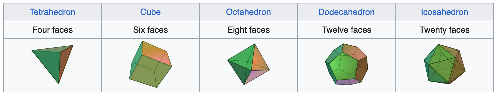
Fig: The Platonic solids are the only five perfectly regular, convex polyhedra — each with identical faces of a single regular polygon and the same number of faces meeting at every vertex. Note that unless stated otherwise all figures can be assumed to have come from Wikipedia.
Size in Euclidean Geometry#
Euclidean geometry measures size at a fixed, charactertistic scale. This is a minimal defining quantity from which the entire geometry unfolds.
e.g.:
circles and spheres have radius or diameters
squares or cubes have edge/side lengths
These are minimal, characteristic scales of measurement, from which the full geometry unfolds.
These measurements act as natural units for the shape. e.g. If the side length of a square is 2 cm, then:
its area is measured as 4 cm² and its perimeter as 8 cm.
doubling the side length to 4 cm changes the area to 16 cm² and the perimeter to 16 cm.
all other properties scale with this single defining length.
In Euclidean space, size is absolute, not relative — it is anchored to the object’s inherent dimension (e.g., side length, radius, or edge length).
Zooming in on these objects fundamentally changes how they appear (a large circle looks like a line to a tiny ant walking along it).
But, some shapes lack a characteristic scale — they are scale-free, with detail at every level of magnification.
No single unit of length captures the shape.
Measured size depends on how closely you look.
What happens to the number of rulers needed to measure the perimeter of a square if you halve the length of the ruler?
What happens to the number of rulers needed to measure the coast of Britain if you halve the length of the ruler?
The question Mandelbrot famously asked was ‘how long is the coast of Britain?’

Much like the question, ‘how long is a piece of string?’ the answer is that ‘it depends…’
In particular, it depends on how long your ruler is and as your ruler gets smaller and smaller, the coast line becomes longer and longer approaching an infinite length.
In 2D and 3D, this notion can be extended to a measuring pixel or voxel of increasingly small size.
The point, for objects like a coastline, is that it isn’t the length that matters (indeed we can’t answer that question). What matters is its complexity.
Symmetries in Euclidean Geometry#
The idea of a symmetry is to perform an operation that leaves a shape undetectably different in shape and form (indistinguishable from its original).
Classic symmetries (the so-called Euclidean motions) preserve lengths, angles, and overall form:
Translation: shifting a shape without rotating it
Reflection: flipping a shape across a line or plane
Rotation: turning a shape around a fixed point
If you close your eyes and I translate, rotate, or reflect a square, you wouldn’t be able to tell — its geometric properties remain exactly the same.
We don’t expect every Euclidean object to have symmetry. Only certain, highly regular shapes satisfy the familiar Euclidean symmetries (translation, rotation, reflection). A square, for instance, is rich in these symmetries, while a circle has infinite rotational symmetry. But most arbitrary shapes (including many smooth curves) have none.
But, there is another type of symmetry, which isn’t captured by classical geometry…
Symmetry under magnification: zooming in on a shape reveals structure that looks similar to the whole.
This is known as self-similarity, and it’s a hallmark of fractals.
Classical Euclidean geometry struggles to describe shapes with this kind of scale-invariant structure — yet these shapes are everywhere in the natural world. Regular shapes are the exception; irregular, self-similar shapes are the norm in nature.
A consequence of this self-similarity across scales is scale ambiguity (fractals have no natural size).
What are we looking at here...?
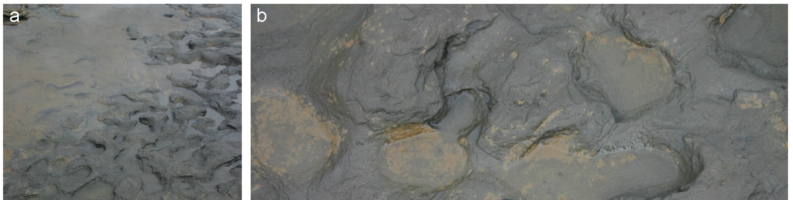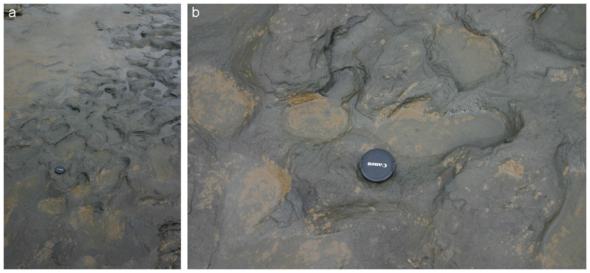Without a familiar object for reference, it’s impossible to tell whether we’re looking at a few centimetres of water or an entire lake viewed from space. The image lacks a characteristic scale — it could represent any size.
Scale ambiguity is why photos in nature will often include another Euclidean object such as a lens cap to act as a reference unit and allow us to interpret the footprints’ size meaningully.
(See for example here: http://www.palaeogeography.net/blog/a-guide-to-taking-geological-field-photos)
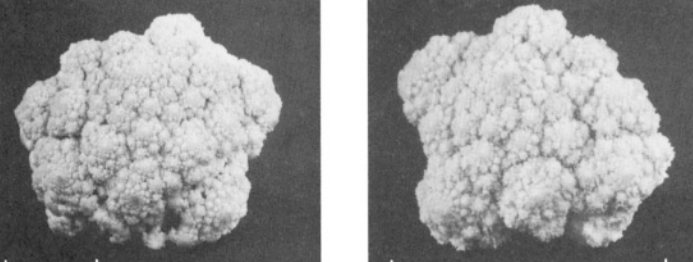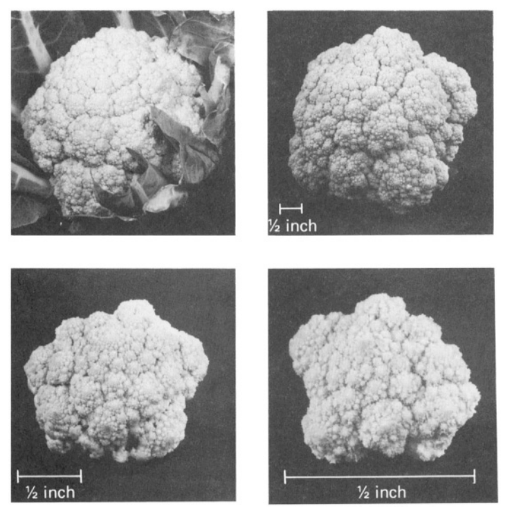
Figure from: H. O. Peitgen, J. Jürgens, and D. Saupe, Chaos and Fractals: New Frontiers of Science
As with the footprints, unless we have some idea of the scale of the figure, it’s impossible to tell what we’re looking at: is it an entire cauliflower or a single floret up close.
Dimension in Euclidean Geometry#
In Euclidean geometry, dimension is always an integer that tells us how many independent directions are needed to describe a point in space. Each additional dimension adds a degree of freedom:
A point has dimension 0: it has no length, area, or volume.
A line has dimension 1: you can move forward or backward.
A plane (like a square or circle) has dimension 2: movement in two perpendicular directions.
A solid (like a cube or sphere) has dimension 3: up/down, left/right, forward/back.
e.g. I’ll meet you at \(X=(x_1, x_2, \ldots, x_d)\) would be sufficient to ensure you could understand my message with no uncertainty in dimension \(d\).
i.e. Points are designated by coordinates/dynamical variables with one for each ‘dimension’. Or, if you prefer, a space is \(d\)-dimensional if locally it “looks like” a patch of \(\mathbb{R}^d\) (where by “looks like” we mean diffeomorphic to).
Perhaps, you’re a physicist or a computer scientist and dimension can be much larger than this (4, 5, … , 100000,…). As long as we are thinking of dimension as ‘amount of information required to specify the location of a point in the space precisely’ then increasing dimension like this is perfectly sensible.
The dimension determines how an object scales, how it can be navigated*, and what kind of measurements (length, area, volume) are meaningful.
Scaling an object changes how much “stuff” it contains — whether that’s mass, volume, length, area, or even the amount of ink you’d need to draw it. The way this “stuff” scales depends on the object’s dimension.
Let’s look at how some classical Euclidean shapes scale as we divide them:
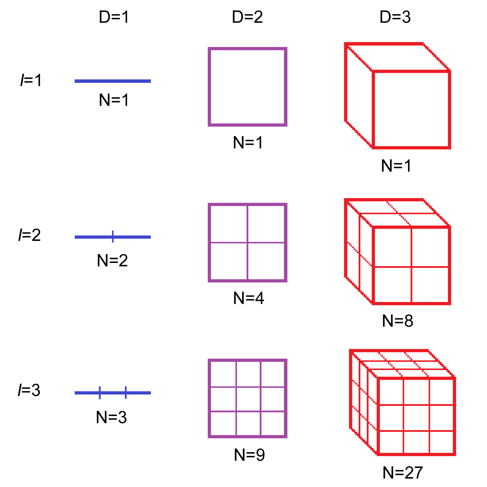
The line, square and cube are all self similar — they can be divided into smaller, scaled-down copies of themselves. This self-similarity allows us to compute their dimension directly using the formula \(N = r^{-D}\), where \(N\) is the number of copies, \(r\) the scaling factor, and \(D\) the dimension.
Take a square as an example:
If we cut the side length in half ($r = 1/2$), we get $N = 4$ smaller squares, each an exact scaled copy of the original.
If we cut the side length into thirds ($r = 1/3$), we get $N = 9$ smaller squares.
This scaling relationship holds consistently. For example:
If we take each of those 4 small squares and halve their side length again, we get 4 copies of each, or $N = 16$ total.
The scaling factor compared to the original is $r = 1/4$.
The key point: It doesn’t matter which two levels you compare — the number of self-similar pieces ($N$) and the scaling factor ($r$) always follow a consistent power-law relationship based on the object’s dimension.
Generalising, if we consider \(N\) small copies of the original object, that are scaled copies by a factor \(r\) we see that \(N\) and \(r\) are related by:
where \(D=-\frac{\log N}{\log r}\) is the dimension.
Note: you may see this formula written as: $\( N=r^{D}, \)$
instead with \(r\) being considered as a ‘magnification factor’, rather than a shrinking factor.
Other familiar Euclidean shapes, like the circle, obviously aren’t self-similar in this way. However, (topological) dimension is a fundamental property that persists across all topologically equivalent objects such as squares or cubes. (A circle is homeomorphic to a square, i.e. there exists a continuous, invertible mapping between them, a sphere to a cube’s surface, and so on).
Power laws#
This is the first of many power laws we will see with a relationship between scales and details (either strict or statistical) that can be expressed as:
where \(\alpha\) is called the power law exponent.
They arise because as one variable decreases another increases, often exponentially.
In many contexts, power laws capture a broader insight: There are far more small things than large ones. This is especially true in statistical power laws found in nature — like the sizes of earthquakes, cities, or craters — where rare large events coexist with an abundance of small ones.
Topological dimension (if you’re curious)#
We said we need no information to describe a point. How much information do we need to describe 2 points? or 100 or any countable number of points? Our previous definition suggests that a collection of points is one-dimensional, which we definitely aren’t comfortable with.
This leads us to a different, more subtle, way to define dimension: topological dimension.
A (semi-formal) alternative perspective: By definition, only the empty set has dimension –1. The topological dimension of a space is defined recursively as one more than the dimension of the lowest-dimensional object needed to separate any small neighbourhood within the space.
In plain terms: Any countable set has dimension 0. It can’t divide space (removing any finite number of points doesn’t change connectivity).
A line has dimension 1: a point (dimension 0) can divide it.
A plane has dimension 2: a line (dimension 1) can divide it.
A solid volume has dimension 3: a surface (dimension 2) can divide it.
Topological dimension is invariant under continuous, one-to-one transformations (called homeomorphisms). Stretching, bending, or deforming an object won’t change it so a square has the same diemnsion as a circle, for example.
But it’s also a crude measure — it doesn’t account for roughness, detail, or how space is filled.
A non-Euclidean object#
The first fractal was a Fourier series: it reveals the limits of Euclidean geometry for describing real or pathological shapes.
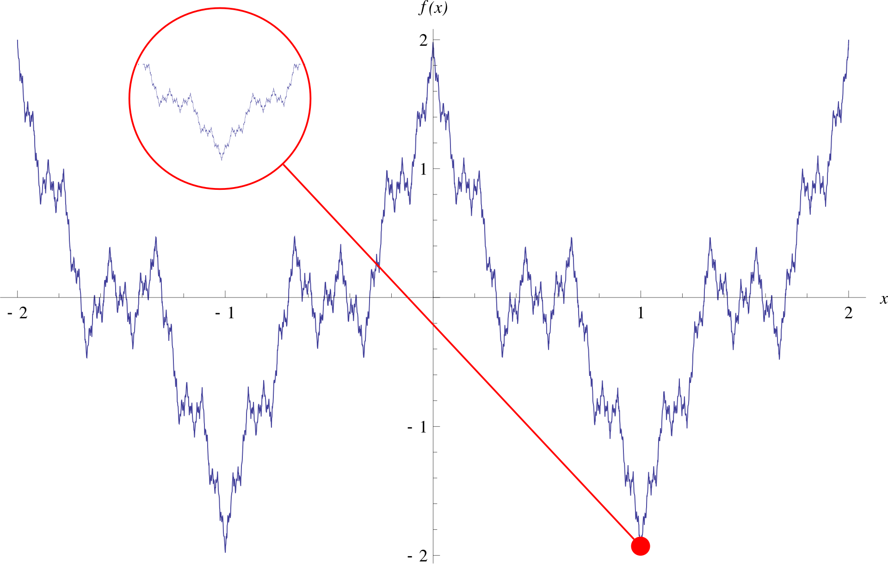
where \(ab>1+3/2\pi\) (to guarantee nowhere differentiability).
Vertical “roughness” is controlled by \(a\) and horizontal frequency is controlled by \(b\).
In the 1800s Karl Weierstrass a German mathematician created a fractal shape that has no flat surfaces - it is only corners!
Consider the properties we have discussed:
Size: The function is continuous everywhere but nowhere differentiable i.e. it has no well-defined slope at any point. This breaks the idea of local linearity and without a well-defined tangent or smooth segment, there’s no consistent local structure to measure.
Symmetry: We wouldn’t expect it to exhibit any classical symmetry. But it does have zoom symmetry.
Dimension: Its graph has fractal dimension strictly greater than 1 (usually around 1.2–1.5 depending on parameters), even though it’s drawn as a 1D function (\(f(x): \mathbb{R}\rightarrow \mathbb{R}\)) i.e. it fills space more densely than a smooth curve.
Traditional (Euclidean) geometry says this is impossible. It works well for smooth, regular shapes — but it fails to describe the jagged, irregular, and scale-rich structures we see throughout nature, prompting the need for a new framework.
Fractal geometry#
Not a fractal:
Fig from: ChatGPT with prompt 1: “image of doll that is holding it’s detached arm. Image shouldn’t be creepy”,
Not quite a fractal:
Fig from: ChatGPT with prompt 2: “Now I want the exact same image but instead of holding the arm in it’s right hand, it should hold a replica of itself (armless)”.
Actually a fractal:
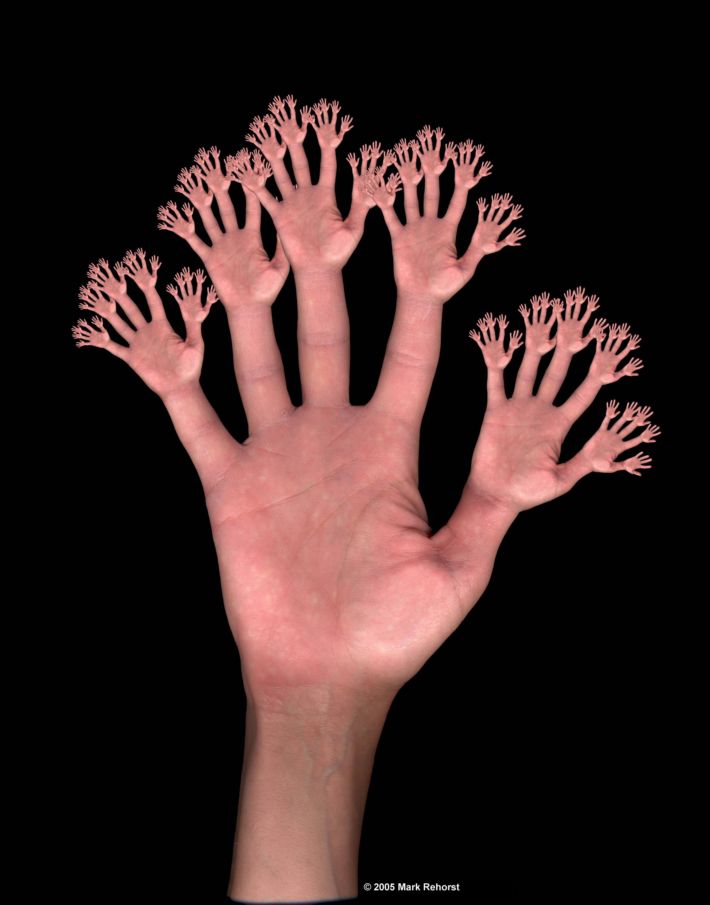Fig from: Mark Rehorst’s Tech Topics
Also a fractal, and real(?)
Fig from: http://iternal.ai/what-is-a-fractal/
Note: I’m not sure how accurate this image is, but in theory, the heart’s vascular system does have a fractal structure.
Fractal properties#
There is no single, universal definition of a fractal.
Instead, fractals are typically recognised by their distinctive properties:
Self-similarity: parts of the shape resemble the whole (made up of small copies of itself), often through recursion or iteration
Infinite complexity: detail persists at arbitrarily small scales
Fractal dimension: a non-integer dimension that reflects how the shape scales or fills space
Types of fractals#
We classify fractals as either ‘classic’ or ‘statistical’.
 |
 |
Classic/strict/mathematical fractals:#
nice toy models
exact self-similarity
infinite scaling range
We’ll spend a lot of time with two canonical examples (once considered mathematical “monsters”).
Cantor set:
Named after German mathematician Georg Cantor, who introduced it in 1883Note that the iterations of the Cantor set depicted go down the page.
Sierpiński triangle:
Named after Polish mathematician Wacław Sierpiński, who introduced it in 1915.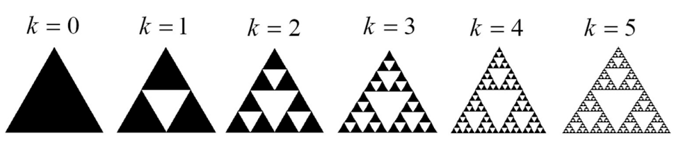
Figure from: doi.org/10.3390/fractalfract8110655
Fractals often arise from simple, recursive rules — but how does that actually work? Think about the logic and structure behind the fractal — what makes it buildable?
What process generates the shape?
What ingredients (starting shape, transformation rules, etc.) are needed?
If you were to write code to generate one, what would your approach be?
What would you repeat?
What parameters would control the output?
Would randomness be involved?
We’ll see lots of alternative ways of generating them in the following lecture.
Statistical fractals#
In a 1904 letter to Emile Bernard, Paul Cézanne wrote
But…

Statistical fractals are:
A broader and more flexible concept than mathematical fractals
Found widely in nature — examples include coastlines, clouds, trees, and cauliflower
Often described as fractal-like because they differ from strict mathematical definitions in two key ways:
1. Self-similarity is approximate or statistical Natural fractals are shaped by environment and history. Their repeating patterns are noisy, irregular, and never exact.
2. Self-similarity holds over a limited range of scales In nature, nothing is truly infinite. Structures typically persist over only a few orders of magnitude — from around $10^9$ m (planetary scale) down to $10^{-12}$ m (atomic scale). At some point, the pattern ends.
These limitations make statistical fractals more realistic (and more useful) for describing the complex, irregular shapes we encounter in the real world.
In what ways do the Cantor set and Sierpiński triangle exhibit the properties of a fractal?
Details are covered in the following sections.
What exactly is "complexity"?
Complexity is a property of a system or object, but like the systems it describes, it resists a single, universal definition. Just as complex systems are defined by a set of features rather than a single criterion, complexity can be measured in different ways, depending on what aspect you’re trying to capture.
There are many possible measures of complexity, including:
Kolmogorov complexity – how compressible a description is
Shannon entropy – how unpredictable or disordered a system is
Network structure metrics – how interconnected or hierarchical a system is
However, these measures each capture only part of the story. Something can be complicated without being complex in the sense used in complex systems science. That is, it might not exhibit the nonlinear interactions, feedback, emergence, and adaptation that define truly complex systems. These systems might still be considered highly complex under some measures.
Why do we care about these mathematical monsters?#
Of course there are no such thing as monsters and so we have nothing to fear.
Mathematics is fortified by the study of monsters and not destroyed by them. These fractals can be deeply explored for proper and complete understanding (zero and the complex numbers were once scary too and now they are very natural concepts).
Remember our goal is to model complex systems… If those complex systems are naturally occurring they are likely to be fractal.
Once you start looking for fractals you will see them everywhere!
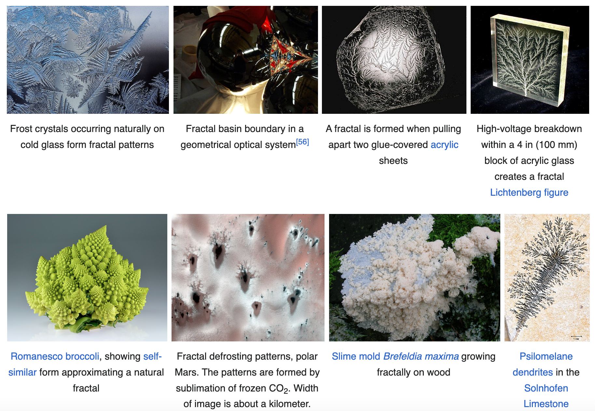
The ubiquity of fractals in nature is one of the most striking examples of how complex patterns can emerge from simple rules and constraints. This isn’t because nature “likes” fractals, but because fractal geometry naturally arises from growth, flow, feedback, and randomness — the same forces that shape most natural systems:
Recursion/Repetition of process: Many natural systems grow or evolve through repeated application of similar rules. Doing the same thing on different scales is easy from an evolution perspective and we don’t need a blueprint with all the detail, e.g. recursive splitting or bifurcation means that the same genetic rules guide both the formation of a whole tree and each of its branches.
Efficiency and optimization: Fractal structures are often efficient in how they fill space or distribute resources, e.g. the branching of blood vessels or lungs allows maximum surface area in a compact volume — critical for diffusion and flow. Similarly, plants maximise their exposure to sunlight and efficiently transport nutritious throughout their cellular structure
Self-organisation and feedback: Systems driven by feedback loops, where local interactions affect global patterns, often settle into fractal-like structures. e.g. patterns in river networks or lightning form from dynamic tension between flow and resistance.
Criticality and phase transitions: Near critical points in physical systems, structure appears at all scales, a hallmark of fractals, e.g. crack patterns in drying mud or avalanche events in a sandpile.
No characteristic scale: In many systems, there’s no single dominant length scale so patterns repeat across a range of sizes, e.g. coastlines, where erosion and deposition occur at every level from boulders to grains of sand.
Emergence from simple local rules: Complex, irregular global structures can emerge from simple local interactions, often without central control, e.g. snowflake formation or crystal growth.
Can also occur in man-made structures: e.g. the roads leading to Rome.
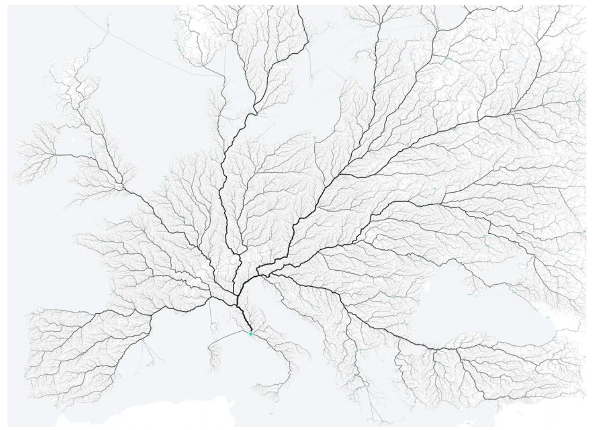
Figure from: Bloomberg – All Roads Lead to Rome
Fractals in the world#
The Cantor set is a classic example of a nowhere-dense, uncountably infinite set with measure zero
The Sierpinski triangle is a classic example of a self-similar, uncountably infinite, fractal set with zero area but infinite perimeter, arising from a recursive process of geometric removal.
Their structure shows up in surprisingly practical ways from modelling of resonance gaps in dynamical systems and quantum mechanics to the design of efficient fractal antennas.
Fractal geometry isn’t just about abstract shapes. It helps us understand complexity in the real world by providing a language for describing irregular, unpredictable, yet patterned systems across nature, technology, medicine, and even art.
Below is a very small sample. Explore what interests you — it’s probably fractal in some way!
Fractal worlds#
Fractal landscapes: Games and simulations use fractals to generate rich, natural-looking terrain using compact code. Algorithms like Perlin noise or diamond-square are behind the endless worlds in games like
No Man’s Sky (18 quintillion planets — deterministic fractals, not random).
The first major use of fractals in film was Star Trek II: Wrath of Khan, which led to the founding of Pixar.
Fractals in biology and medicine#
Lungs have a surface area >100 m² packed into the volume of a few tennis balls, thanks to fractal branching (~2.97D).
Blood vessels and neurons are fractally organised to reach everywhere with minimal material.
Cancer diagnostics: Healthy cells show orderly fractal growth; cancerous cells do not.
Protein folding and antibody binding relate to fractal surface dimensions (~2.4).
Viruses use fractal-like receptor patterns to bind to cells.
Fractals in culture#
Literature: Fractals in fiction and narrative
Fractal tech#
Fractal antennas: The Sierpiński carpet is used to design compact, high-performance antennas that support multiple frequencies — ideal for mobile phones and satellites. More here
Fractal compression: Fractal patterns can represent complex images using very little data — useful in image compression and 3D modelling.
Fractal fluid distributors: Fractal geometries are used in chemical reactors and heat exchangers to efficiently control fluid flow across scales. See: Fractal Fluid Control
Reminder: you are going to need to run statistics for your Project! This means your code needs to be functional early.
Creating Fractals#
We need formal descriptions of fractals (for analysis and to give the computer). There are several widely used frameworks for defining fractals:
Initiator + generator
Iterated function systems
Lindenmayer systems
Each method captures different aspects of how fractals are built, and each has its own strengths depending on the kind of fractal or application we’re interested in.
Fundamentally though, they all involve very simple mathematical mappings (from simplicity emerges complexity) that describe how the fractal is made from smaller copies.
Option 1: Initiator + generator#
initiator (aka base): is a starting object for the construction
generator (aka motif): defines exactly how the initiator (and each subsequent object) should be transformed into a more complex and detailed structure.
i.e. it dictates how to recursively replace an object with smaller-scale replicas of it at each iteration via rules, formulas or algorithms
equivalently it is the object produced after one iteration
Cantor set#
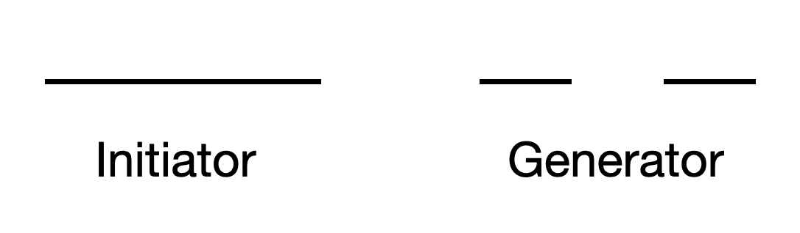
The initiator is a horizontal line of length \(L\) (often set to 1).
The generator is simply ‘remove the middle bit’. The standard Cantor set has \(\lambda=\frac{1}{3}\) such that the middle third is removed and two lines of equal length remain.
A different way to think about it: The Cantor set consists of all points in \([0,1]\) whose base-3 expansion contains only the digits 0 and 2 i.e. no 1s. e.g. \(1/3=0.1_3\) is not in the Cantor set, but \(1/4=0.020202\ldots_3\) is. Removing the middle third at each step of the construction corresponds to eliminating numbers with a 1 in any ternary digit position.
Sierpiński triangle#
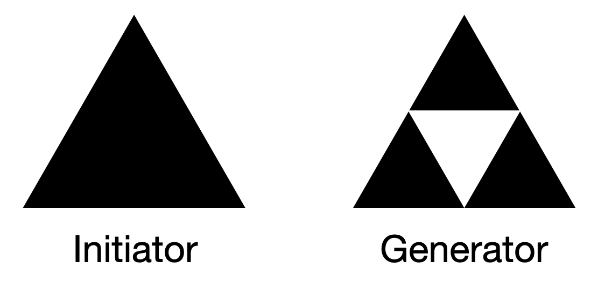
To construct it we iteratively remove central triangles. The standard form uses an equilateral triangle of length \(L\) as the initiator and the generator is the rule to divide into 4 congruent replicas and remove the central replica (here the upside down triangle).
Option 2: Iterated Function Systems (IFS)#
Fractals can also be generated by applying a set of contractive affine transformations iteratively to a set of points in \(\mathbb{R}^n\).
Each iteration refines the structure and adds detail.
Contractive: (reduces distances between points i.e. it contracts)
Formally, let \(F\subseteq \mathbb{R}^{n}\) and \(f:F\to F\).
\(f\) is a contraction on \(F\) if there exists a constant \(0 \leq c < 1\) such that \begin{equation*} d( f(x), f(y)) \leq c d(x,y) \text{ for all } x, y \in F. \end{equation*} The closer \(c\) is to 0, the stronger the contraction, the closer \(c\) is to 1, the weaker the contraction, but it’s still shrinking provided the inequality holds. The smallest \(c\) for which the inequality holds is called the contraction factor of \(f\).
Affine transformations: in \(\mathbb{R}^n\) has the form \(f(x)=Ax+b\), where \(A\) is a linear transformation (e.g. scaling, rotation, shear) and \(b\) is a translation vector.
Iterative application: the IFS repeatedly applies the contractive map to points, generating a sequence of transformed points. The fractal pattern emerges from the limit set of this process
There is a unique compact set \(\mathcal{A}\) satisfying \(f(\mathcal{A})=\mathcal{A}\), i.e. \(\mathcal{A}\) is an attractor
Cantor set#
The Iterated Function System (IFS) is the set of contraction mappings and their combined action defined by:
where:
\(S \subseteq [0,1]\) is a set,
\(l(x) = \tfrac{1}{3}x\) is the left contraction,
\(r(x) = \tfrac{1}{3}x + \tfrac{2}{3}\) is the right contraction, and
Each step shrinks and splits the current set, preserving only the outer thirds:
\[ S_{n+1} = f(S_n) = l(S_n) \cup r(S_n) \]\(n \to \infty\), the sequence \(S_n\) converges to the middle-third Cantor set.
Cantor set#
Let \(X = [0, 1]\) equipped with the standard Euclidean metric \(d\), so that \((X, d)\) forms a metric space. (A metric space consists of a set \(X\) and a function \(d\) that defines the distance between any two points in \(X\).)
Consider the following two contraction mappings on \(X\):
Left map:
\[ l(x) = \tfrac{1}{3}x \quad \Rightarrow \quad l(X) = \left[0, \tfrac{1}{3}\right] \]Applying this map iteratively yields \(x_n = \frac{x_0}{3^n}\) for any \(x_0 \in [0,1]\)
Thus \(x_n \to 0\) as \(n \to \infty\), and the unique fixed point of \(l\) is \(x^* = 0\)
Right map:
\[ r(x) = \tfrac{1}{3}x + \tfrac{2}{3} \quad \Rightarrow \quad r(X) = \left[\tfrac{2}{3}, 1\right] \]Iteration now gives convergence to 1: \(x_n \to 1\)
The unique fixed point of \(r\) is \(x^* = 1\)
Now define a set-valued Iterated Function System (IFS) mapping \(f\) for any subset \(S \subseteq [0,1]\) by:
i.e., \(f\) applies both contraction maps to \(S\), and takes the union of the resulting images.
Repeated application of the IFS map \(f\) to an initial set \(S_0 = [0,1]\) generates a nested sequence of sets:
Each step applies both contraction maps, keeping only the left third and right third of each interval. In the limit, the sequence converges to a unique compact set \(\mathcal{A} \subseteq [0,1]\) such that:
The Cantor set is the attractor of the IFS.
Sierpiński triangle#
We define our initial triangle with three points \(P_1\), \(P_2\) and \(P_3\).
The contraction maps are a simple scaling and translation.
For any point \(x\in \mathbb{R}^2\) each of these functions will map the point \(x\) to a point \(f_i(x)\) that is halfway to the relevant triangle vertex \(P_i\)
The IFS is the union of these functions, \(f_1(x) \cup f_2(x) \cup f_3(x)\) and the gasket is invariant under the simultaneous application of these three transformations (the set maps onto itself when at the limit).
Note that the Sierpiński gasket can be constructed in many equivalent ways:
Starting from just the triangle’s vertices: \(I_0 = \{P_1, P_2, P_3\}\) (see this visualisation by Leios Labs), or
Using the entire filled triangle: where each point is written as a barycentric combination:\(I_0 = \lambda_1 P_1 + \lambda_2 P_2 + \lambda_3 P_3\), with weights (barycentric coordinates) \(\lambda_1, \lambda_2, \lambda_3\) satisfying:
\(\lambda_i \geq 0\) for all \(i\) (non-negativity)
\(\lambda_1 + \lambda_2 + \lambda_3 = 1\) (convex combination)
The fractal will emerge faster with this initialisation.
Whether we start with just the triangle’s corners or the entire interior, repeated application of the IFS produces the same attractor: the Sierpiński triangle.
This construction is deterministic, but we can also apply the IFS transformations probabilistically. These random iteration algorithms are called the ‘chaos’ game (Barnsley provided the first chaos game algorithm in his book Fractals Everywhere [1988]).
The ‘chaos’ game#
Move halfway from the currently location towards a randomly selected vertex of the triangle.
The ‘chaos’ game#
We do not apply all the functions in the IFS at once. Instead, we can randomly select one of the \(f_i\) from the IFS to apply at each step.
Start with a seed point \(x_0 \in \mathbb{R}^n\), and iterate using the following random procedure:
where at each step, the function index \(i \in \{1, 2, \dots, N\}\) is chosen randomly from the IFS.
The sequence of points will very quickly get sucked onto the ‘strange attractor’ (the fractal) and will then stay on it forever.
To generate a good visual approximation of the attractor, a large number of points is typically plotted, often discarding the first few (the “transient”) to ensure the orbit has settled onto the attractor.
A useful design principle: the probability \(p_i\) of selecting function \(f_i\) should ideally reflect the relative size of the copy \(f_i(A)\) compared to the whole attractor \(A\). However, for many well-known IFS fractals, simply choosing each map with equal probability produces good results.
Option 3: Lindenmayer systems#
aka L-systems
This is a grammar defined by the tuple: \(G = (V, \alpha, R)\)
\(V\) is the alphabet is made up of “symbols” the system manipulates, sometimes broken into: Variables (the elements that can be replaced); and Constants/Parameters (the elements that can’t be replaced)
\(\alpha\) is starting state/axiom
\(R\) are the Rules that define how the variables are replaced with combinations of constants and other variables
Formal string rewriting systems introduced in 1968 by the botanist Aristid Lindenmayer to model the growth of plants (but also developed thousands of years ago in India as a method of decoration.)
Uses an algorithm that is often referred to as ‘turtle graphics’ (and python has a turtle package you might like to look at for generating fractals.), which operates by recursively replacing parts according to instructions provided by a set of rewriting rules.
Note that turtle doesn’t play very nice with Jupyter Notebooks so you’ll need to do this in your own IDE if you want to play with it
The recursive nature of the L-system rules is what leads to self-similarity and clearly this is a variation of the initiator+generator approach.
Any fractal that consists of smaller copies of itself, with the pieces all connected such that we could draw it without taking our pen off the page, could probably be generated by a suitable L-system.
Cantor set#
alphabet: \(\{\text{F}\), \(\text{f}\}\)
\(\text{F}\): Move forward one step while drawing a line
\(\text{f}\): Move forward one step without drawing a line
start: \(\text{F}\)
rules:
\[ \text{F} \rightarrow \text{FfF} \]\[ \text{f} \rightarrow \text{fff} \]
where \(\text{F}\) means “draw forward” and \(\text{f}\) means “move forward” (and don’t draw).
One step produces the string \(\text{FfF}\)
Two steps: \(\text{FfFfffFfF}\)
…
Sierpiński (arrowhead) curve#
The resulting fractal is exactly the same in the limit as the triangle but it’s built with a one-dimensional curve.
alphabet: \(\{\text{F},\text{G},+,-\}\)
start: \(\text{F}\)
rules:
\[ \text{F} \rightarrow \text{G}-\text{F}-\text{G} \]\[ \text{G} \rightarrow \text{F}+\text{G}+\text{F} \]where, \(\text{F}\) and \(\text{G}\) both mean “draw forward”, \(+\) means “turn left by angle”, \(−\) means “turn right by angle” and angle=60°
Iteration 0: \(\text{F}\)
Iteration 1: \(\text{G}-\text{F}-\text{G}\)
Iteration 2: \(\text{F}+\text{G}+\text{F}-\text{G}-\text{F}-\text{G}-\text{F}+\text{G}+\text{F}\)
Iteration 3: \(\text{F}+\text{F}+\text{G}+\text{F}+\text{G}-\text{F}-\text{G}-\text{F}+\text{G}+\text{F}-\text{G}-\text{F}-\text{G}-\text{F}+\text{G}+\text{F}-\text{G}-\text{F}-\text{G}+\text{F}+\text{G}+\text{F}+\text{G}-\text{F}-\text{G}\)
… The string gets long fast, which is the point: each iteration adds geometric detail.
Turtles#
To visualise the fractal we can then use a turtle drawing system. This is a way to interpret a string of instructions as movements of a virtual “turtle” with a position and direction in space. The turtle draws by moving forward and turning based on commands like “draw forward”, “turn left” or “turn right”.
While the L-system defines the rules and angles, the turtle doesn’t automatically adjust step length or the initial heading. It is therefore up to the rendering system or programmer to include these details at implementation for correct and consistent visualisation.
The step length: as the number of iterations increases, the number of line segments grows and the segments themselves must get shorter to preserve the overall shape and size. This is achieved by scaling down the step length at each iteration.
The initial heading: this determines the overall orientation of the drawing
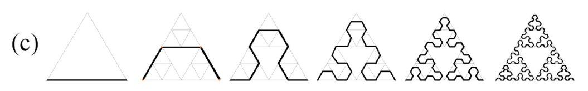
Fig from: https://doi.org/10.3390/fractalfract8110655
A really nice complexity explorable here: Hokus Fractus
Fractal properties#
We’ve seen that fractals are defined by their properties:
self-similarity
infinite complexity
fractal dimension
We will now explore these properties for the Cantor set and the Sierpiński triangle.
Self-similarity#
Self-similarity means that the fractal contains smaller copies or subsets of itself.
The overall pattern is repeated at different (all) scales.
Recursion, contraction mapping and L-system replacement all sensibly produce self-similarity.
Infinite complexity#
Infinite complexity of the Cantor set#
Following each iteration of generating the Cantor set, what is the number of segments and total length of the resulting object?
first iteration: there are two line segments of length \(\frac{L}{3}\) each. Therefore, the length of the Cantor Set after the first iteration is \(\frac{2L}{3}\).
second iteration: the middle third of each of the remaining line segments is removed. This leaves four line segments of length \(\frac{L}{3}\frac{1}{3}=\frac{L}{9}\) each. Therefore, the total length of the Cantor Set after the second iteration is \(\frac{4L}{9}\).
…
Generalising this result to \(n\) iterations to understand the final fractal:
after the \(n\)th iteration: we observe that at each iteration, the remaining line segments are divided into \(3^n\) equal parts, and the middle third is removed. Therefore, the length of each line segment at the \(n\)th iteration is \(L\big(\frac{1}{3}\big)^n\). Since we have \(2^n\) line segments at each iteration, the total length of the Cantor Set after the \(n\)th iteration is \(2^n L\big(\frac{1}{3}\big)^n = L\big(\frac{2}{3}\big)^n\)
as \(n\rightarrow \infty\) the number of segments \(2^n\rightarrow \infty\) and the length of each line segment \(L\big(\frac{2}{3}\big)^n\rightarrow 0\).
i.e. The final topological space is nowhere dense and not a countable set (i.e. we don’t have a one-to-one correspondence with the natural numbers).
Infinite complexity of the Sierpiński triangle#
Following each iteration of generating the Sierpiński triangle (equilateral with length \(L=1\)), what is the ‘perimeter’, \(P\), and area, \(A\), of the resulting object? Again, we will generalise the result to \(n\) iterations to understand the final fractal.
Perimeter:
Step 0: 3 sides of length 1, \(P=3\)
Step 1: We now have 3 times as many sides that are half as big, \(P=3\times \frac{3}{2}=\frac{9}{2}\)
Step 2: We again have 3 times as many sides as before and each side is half as long, \(P=3\times \frac{9}{2}\frac{1}{2}=\frac{27}{4}\)
…
Step \(n\): \(P=3\times \Big(\frac{3}{2}\Big)^n\)
\(\lim_{n\rightarrow\infty}3\times \Big(\frac{3}{2}\Big)^n=\infty\)
Area:
Step 0: Let area =\(A\)
Step 1: 1/4 of the area has been removed so \(A=\frac{3}{4}A\)
Step 2: We again remove 1/4 of the existing area, \(A=\frac{3}{4}\frac{3}{4}A\)
…
Step \(n\): \(A=\Big(\frac{3}{4}\Big)^nA\)
\(\lim_{n\rightarrow\infty} \Big(\frac{3}{4}\Big)^nA=0\)
This is an object with infinite perimeter and no area!
An infinitely long curve doesn’t tell us much though. A more useful measure is the fractal dimension.
Fractal dimension#
Recall, for our standard objects:
is equal to this topological dimension.
We now call \(D\) the self-similarity dimension. It is a measure that quantifies the complexity (aka roughness) of an object. It tells us something about how wiggly a curve is, how crinkled a surface is, or how porous a complex volume is, etc.
And it doesn’t have to be an integer. We can generalise this logic (of looking at the number of scaled copies for a given magnification) to work with other objects such as with geometric fractals.
These values are not unique descriptors and many fractal objects may be constructed with the same scaling relationship but have vastly different appearances.
Note that fractals still have an integer topological dimension, but in terms of the amount of space they take up, it behaves like a higher-dimensional space.
Dimension of the Cantor set#
Consider first a line segment of unit length.
If we scale it by a factor of \(r = \frac{1}{3}\), we can tile the original segment with \(N = 3\) non-overlapping self-similar line segments.
Using the self-similarity dimension formula:
This result aligns with our intuition, we know a line is a one-dimensional object.
To generate the (standard middle third) Cantor set we remove the middle third, leaving only \(N=2\) copies of the original line.
Hence,
i.e. the Cantor set is less than a line but more complex than a point.
Dimension of the Sierpiński triangle#
Consider first a standard equilateral triangle.
If we scale it by a factor of \(r = \frac{1}{2}\), we can tile the original triangle with \(N = 4\) non-overlapping replica triangles.
Using the self-similarity dimension formula:
This matches our geometric intuition: the triangle, like the square, fills a 2D region and is topologically equivalent to it — both are compact, connected, and 2-dimensional surfaces.
To generate the Sierpiński triangle we remove the middle replica, leaving only \(N=3\) copies of the original triangle. These replicas are smaller by a factor of \(r=1/2\) the size of the original.
Hence,
i.e. the Sierpiński triangle is less than a complete triangle but more complex than a line.
Box-counting (Minkowski–Bouligand) dimension#
When it comes to computing the dimension of more complex objects, like for example the British coast line, we do not have exact replicas when we scale. For statistical fractals we can only hope to estimate their fractal dimension.
In Euclidean geometry, we know that:
The length of a 1D line scales like \(\varepsilon\)
The area of a 2D object scales like \(\varepsilon^2\)
The volume of a 3D object scales like \(\varepsilon^3\)
This gives the general rule:
where \(d\) is the dimension.
Alternatively, we can consider the number of balls, \(N\), of size \(\varepsilon\) needed to cover this “stuff” by inverting this rule:
Motivated by this idea, the box-counting dimension analyses how the number of boxes of side length \(\varepsilon\), denoted \(N(\varepsilon)\), needed to cover the object changes as \(\varepsilon\) varies:
For a 1D curve of length \(L\): \(N(\varepsilon) \propto \frac{L}{\varepsilon}\)
For a 2D region of area \(A\): \(N(\varepsilon) \propto \frac{A}{\varepsilon^2}\)
In general: \(N(\varepsilon) \approx \frac{C}{\varepsilon^{d}}\) for some constant \(C\)
This power-law scaling holds even when the dimension \(d\) is non-integer, allowing us to extend the idea of dimension to fractals.
We define the box-counting dimension as:
This is one of the simplest methods for estimating the fractal dimension of an object.
Computing the box-counting dimension of a standard (non-fractal) object#
Consider a straight line…
The box-counting dimension is the limit of the sequence:
i.e. a single line segment of length 1 can be completely covered with \(N=1\) ball, halving the size of the ball doubles the amount of balls required etc.
This agrees with the line’s topological dimension.
Computing the box-counting dimension of a mathematical fractal#
As an example, consider the generalised Cantor set, where we remove the middle portion of a line segment of length 1, leaving behind two segments of length \(\lambda\).
At the first iteration, one ball of size \(\varepsilon = 1\) suffices to cover the set.
After one application of the generator, two intervals of size \(\lambda\) remain, requiring \(N = 2\) balls of size \(\varepsilon = \lambda\).
Continuing this process, after \(k\) iterations we have \(N = 2^k\) intervals, each of length \(\lambda^k\), so \(\varepsilon = \lambda^k\).
This gives the dimension:
Note: Rather than viewing the dimension as the limit as \(\varepsilon \to 0\), we’re expressing it as the number of iterations \(k \to \infty\), which corresponds to shrinking the cover size geometrically.
For the classic middle-third Cantor set, where \(\lambda = \frac{1}{3}\), this gives:
Some limiting cases:
As \(\lambda \to \frac{1}{2}\), the removed portion vanishes, and we retain the entire interval — the dimension approaches 1.
As \(\lambda \to 0\), the retained intervals shrink to points — the dimension approaches 0.
Compute the dimension again with the standard representation of the dimension and $\varepsilon \to 0$
For the classic middle-third Cantor set, \(\lambda = \frac{1}{3}\), so:
as before.
In practice, for empirical or finitely constructed objects, we estimate this by covering the object with boxes of side length \(\varepsilon\) and counting how many are required.
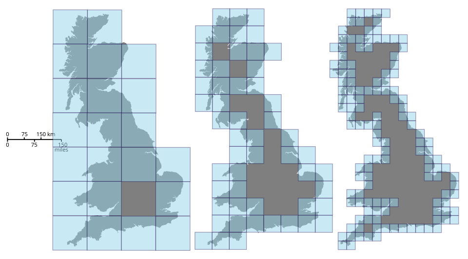
If the object is “fractal-like,” then:
Taking logs:
So we estimate \(d\) by plotting \(\log N(\varepsilon)\) versus \(\log \varepsilon\) and measuring the slope. A straight-line region indicates good scaling behaviour.
Note: the relationship may not hold across all scales—too small \(\varepsilon\) might cover only individual points; too large may cover the whole object. We look for a scaling region in between.
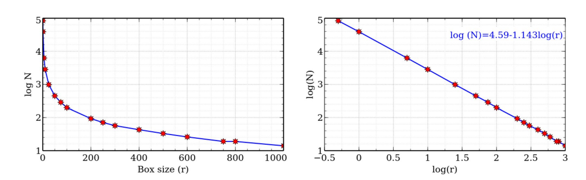